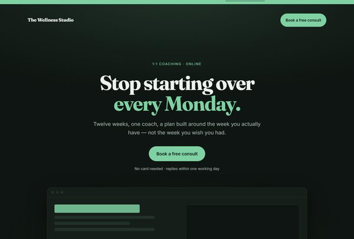
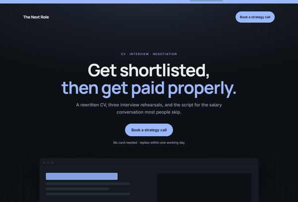
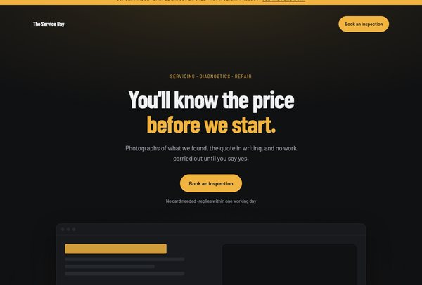
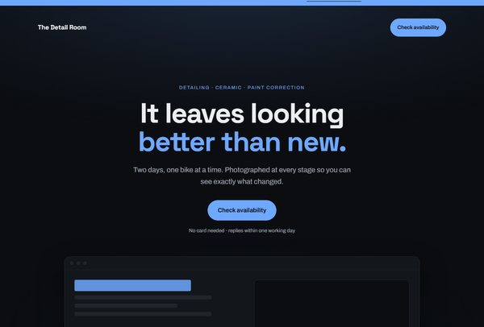
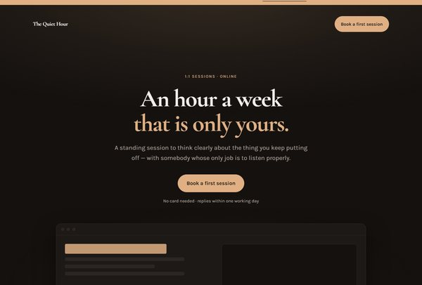

Landing pages for coaches & local services
Work you can
walk around.
You have the audience. What you do not have is the one page that turns it into booked calls. That is the page I build — and every job below opens.
Service log
Pick one to hold the ring and read what was done.
Jobs I’ve actually done
Real machines, real work. Every entry here is a job I did and documented — no stock photos, no borrowed portfolios.
Sample layouts
What yours could look like
Five landing pages built the way I build them — one goal, one path, nothing on the screen that is not helping. Open any of them; they are real pages, not pictures.
These are concept pieces. No real business is represented, no client is named, and the quotations on them are illustrative. The paid work is in the ring above.
-

Health & wellness coaching
The Wellness Studio
A twelve-week 1:1 offer. One promise, one price, one button.
Open the page -

Career coaching
The Next Role
CV, interviews and the salary conversation, sold as one programme.
Open the page -

Car service shop
The Service Bay
Built on the thing customers actually want: the price before the work.
Open the page -

Motorcycle detailing
The Detail Room
Photographed at every stage, because the proof is the product.
Open the page -

Life coaching
The Quiet Hour
A standing weekly hour. No packages, no lock-in, no pressure.
Open the page
What I do
-
Tech support
Windows install and clean reformat. BIOS updates. Blue screens, boot failures and diagnostics. Hardware repair, upgrades and full custom builds. Cleaning, repasting and setup.
-
Landing pages
One page built to turn an audience into enquiries. If your posts get seen but nobody gets in touch, this is the missing piece. Loads fast, reads clearly, works the same on a phone as on a desktop.
-
Video editing
Content and short-form. Cut for the platform it's going on, not just cut down.
54°C
On air cooling, under load.
A Ryzen 9 7900X and an RX 7800 XT in a white build, holding 54°C without a drop of liquid cooling. That reading is on the cooler's own display, in the photo behind this text.
About
Who you'd be handing your machine to
I'm Cael. I fix computers and build the things that run on them.
BSIT, Adamson University, 2024 — but the paper isn't the useful part. The useful part is that I've had my hands inside machines for years. Full desktop builds, laptop teardowns down to the bare board, thermal work, cable management, and diagnostics on the problems that don't have an obvious cause.
I don't get stuck on tech. When something breaks in a way I haven't seen before, I work it out.
Outside the bench: competitive Valorant — top 4 of 32 representing Adamson at Acad Arena, plus two school tournament wins. Kendo on Saturdays. Both taught me the same thing, which is to stay level when it matters.
How I work
- I tell you what's actually wrong. If it's dust and old thermal paste, I'll say it's dust and old thermal paste. I'm not going to invent a part you need to buy.
- You'll know what's going into your machine. If second-hand parts are what brings it inside your budget, I'll tell you which ones are used and which are new — before you pay, not after.
- I show the work. The photos on this page are jobs I actually did. Where the machine was my own, the card says so.
- Careful beats fast. Some jobs brick your hardware if they're rushed. Those ones get done properly or they don't get done.
Q&A
Questions people actually ask
If yours isn't here, just ask. No question is too basic.
My PC got slow. Do I need to buy a new one?
Usually not. Most "dying" computers are choked with dust and running on thermal paste that dried out years ago — the machine throttles itself to avoid overheating, and it feels like it's failing.
One of the jobs on this page was exactly that: frame drops and stuttering in games, fixed with a clean and a repaste. Not one part replaced. I'll tell you honestly if it really is the hardware.
Will I lose my files?
Not without you knowing first. A clean Windows install wipes the drive, so if that's what your machine needs, I'll tell you before anything is erased and we sort your files out first.
For cleaning, repasting, upgrades and repairs, your data isn't touched at all.
Do you use second-hand parts?
Sometimes — it's often the only way to hit a tight budget, and there's nothing wrong with a good used part. But you'll always know which parts are used and which are new before you pay, not after.
I've done exactly that on an office build: used where it was safe to, brand new where it mattered.
Can you build a PC to my budget?
Yes. Tell me what you'll use it for and what you can spend, and I'll spec the parts, source them and build it. That covers everything from an office desktop to a high-end gaming rig — both are on this page.
I don't know the technical terms. Is that a problem?
No. Describe it however it makes sense to you — "it's making a noise", "it turns off by itself", "it's slow now". Working out what that means technically is my job, not yours.
Contact
Tell me what the page has to do
Who it is for, and the one action you want them to take. That is enough to start — you do not need a brief, a wireframe, or the right words for any of it.